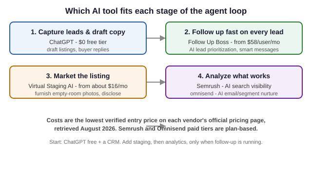

Best AI Tools for Real Estate Agents (2026 Roundup, Verified Pricing)
The short version
TL;DR: For most agents the highest-leverage AI buy is a real-estate CRM with built-in AI, and Follow Up Boss is the pick I keep coming back to - its smart summaries, suggested messages, and predictive lead prioritization are included at no extra charge. Pair it with ChatGPT's $0 free tier for drafting listing copy, Semrush to see where your farm area shows up in AI search, and Virtual Staging AI for empty-room photos when you cannot physically stage. Total start cost: $0 to about $70 a month for a solo agent.This is a roundup for working agents and small teams, not every AI product that mentions real estate. I pulled pricing from each vendor's official page in August 2026 and focused on tools that fit the daily loop: capture a lead, follow up fast, market a listing, and know which content works. Prices can move, so confirm before you pay.
What should an AI tool actually do for a real estate agent?
Before you spend anything, be clear about the job. The valuable stuff is not flashy image tricks but speed-to-lead on incoming inquiries, not letting a hot lead sit for hours, and drafting follow-ups that sound human instead of templated. Tools that do these three earn their subscription; tools that only make pretty listings are nice-to-haves.
So I split the roundup by job: lead handling and CRM, marketing visibility, listing visuals, and email nurture. One tool per job avoids five overlapping apps.
Follow Up Boss - the best AI CRM for lead follow-up
Follow Up Boss is built specifically for real estate, and its AI is bundled in rather than sold as an upsell. Per its official pricing page, every plan includes smart summaries, suggested smart messages, suggested tasks, and predictive lead prioritization. On the entry Grow plan these come standard, though the page notes some AI relies on the calling feature, which is a paid add-on on Grow.
Pricing from the official page: Grow is $69 per user per month on monthly billing, or $58 per user per month billed annually. Pro (10 users included) is $499 a month, or $416 annual. A solo agent starts on Grow; a five-to-ten person team gets better per-user pricing on Pro.
Semrush - knowing where your farm area shows up in AI search
Semrush is not real-estate-specific, but it answers a question agents now face: when a buyer asks their AI assistant for "an agent in [your town]," does your name come up? Its SEO and AI-search plans track keywords daily and produce AI visibility reports for any domain, plus position tracking and site audit - useful for judging whether your listing pages and local content are surfaced.
On the official pricing page the tiers run from a freelancer SEO plan through Starter, Pro+, and Advanced, with Enterprise at custom pricing. I am not quoting dollar figures because the page's prices change by plan and region; the structure and the AI-search tracking are the stable, verifiable part.
Pipedrive - an AI sales assistant if your CRM is not real-estate native
Pipedrive's AI Sales Assistant is a solid alternative if you already run a general sales pipeline and just want AI on top of it. The official feature page says it is free and easy to set up with no credit card required, and it handles what agents do manually: summarizing deals, predicting win probability, and suggesting next actions. It also has an AI email generator and summarizer.
Pipedrive also pairs with LeadBooster, its chatbot and web-form add-on that schedules meetings and pushes contacts into your pipeline. I did not find clean public per-user prices from a primary source, so treat cost as plan-dependent.
Virtual Staging AI - cheaper than photographing an empty room well
Virtual Staging AI drops furniture and decor into empty-room shots so a listing does not look hollow - cheaper than paying a staging crew for most listings. The official pricing page lists annual plans with monthly-equivalent rates: Basic around $16/mo for 6 photos, Standard around $19/mo for 20 photos (marked most popular), Professional around $39/mo for 60, and Enterprise around $79/mo for 150.
The one rule: disclose virtual staging in the listing notes. Most MLS rules require you to flag that the furnishings are rendered, not real.
Omnisend - email and SMS nurture with AI, with an honest caveat
Omnisend is first and foremost an email and SMS automation platform aimed at ecommerce, so I want to be straight: it is a general marketing tool you repurpose for nurture, not a built-for-real-estate lead engine. The AI layer is the draw - an AI Segment Builder that writes segments from plain-language prompts, Forms AI for building signup forms, and Reports AI for digesting campaign performance. Per the official pricing page, there is a $0 free plan (500 emails and 250 contacts a month), and paid plans scale with your contact list, with SMS from about $0.007 per message depending on country and volume.
If your nurture is mostly email, it works. If you want a real-estate-native CRM plus messaging in one place, Follow Up Boss covers that and you can skip Omnisend.
ChatGPT - the $0 drafting assistant for listing copy and replies
No roundup for professionals is complete without the generalist. ChatGPT's free tier is genuinely useful: rough-draft a listing description, rewrite a terse buyer email into something warmer, or pull a draft of a first-inquiry response while you drive between showings. Verified on OpenAI's pricing page in August 2026, the free tier is $0 and Plus is $20 a month.
The catch is the same as every general assistant: it does not know your local market, price points, or state disclosure rules, so treat its output as a first draft and check it against your own facts before pressing send.

How do the options compare at a glance?
| Tool | Primary job | Verified starting cost (Aug 2026) | AI included? |
|---|---|---|---|
| Follow Up Boss | Real-estate CRM, lead follow-up | Grow $69/user/mo (monthly) or $58/user/mo (annual) | Yes, on all plans |
| Semrush | SEO + AI search visibility | Plan-based; check pricing page | AI visibility reports |
| Pipedrive | General CRM + AI sales assistant | Plan-dependent; check pricing page | Yes, Sales Assistant free with account |
| Virtual Staging AI | Furnish empty listing photos | From about $16/mo (annual, 6 photos) | AI staging |
| Omnisend | Email + SMS nurture | $0 free; paid from ~$16/mo | AI Segment Builder, Forms AI |
| ChatGPT | Drafting and writing | $0 free; Plus $20/mo | Built in |
Sources: official Follow Up Boss, Semrush, Pipedrive, Virtual Staging AI, Omnisend, and OpenAI pricing pages, all retrieved August 2026.
What should you buy on a beginner budget?
For a solo agent, build in this order:
- ChatGPT free tier ($0) for drafting - listing copy, replies, anything text.
- Follow Up Boss Grow ($69/mo monthly, $58/mo annual) as your single source of truth for leads, with AI prioritization doing speed-to-lead.
- Virtual Staging AI Standard at about $19/mo if you list empty homes.
- Add Semrush only after follow-up is running, if AI-search visibility in your farm area matters.
- Skip Omnisend unless email nurture is a large, separate channel.
What is the fastest build for a small team?
For two to ten agents, Follow Up Boss Pro ($499/mo for 10 users, or $416/mo annual) bundles calling, texting, and the same AI features across the team, where the per-user cost drops. Keep tool sprawl low and put the AI where it compounds.
FAQ
Is Follow Up Boss worth it for one agent?
At $69 a month alone or $58 a month billed annually, it is the most defensible first purchase here because the AI lead prioritization and smart messages are included rather than a priced add-on, per the official page. If you close one extra deal a year because a hot lead was worked in minutes instead of hours, it pays for itself.
Do I need both a CRM like Follow Up Boss and an email tool like Omnisend?
Usually not at the start. Follow Up Boss already sends follow-up text and email within its pipeline. Omnisend only earns a slot if you run email nurture as a large, separate channel, like a big past-client list, and want the AI segment and form builders.
Is virtual staging ethically allowed?
It is allowed in most markets if you disclose it in the listing. Check your local MLS rules and brokerage policy, and add a plain note that the furnishings are virtual.
Can AI replace an agent's personal follow-up?
No. These tools make follow-up faster and better-worded, but buyers and sellers respond to an actual person who knows the local market. Use AI to remove typing time, not the human reply.
Which tool helps me show up in AI assistants' answers?
Semrush's AI-search tracking is built for this. It lets you monitor the keywords and prompts relevant to your market and see whether your domain surfaces in AI responses, per its official product page.